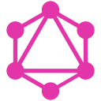

What I build, the tools I use, and how a project runs.
From a landing page to a live-data platform: React front ends, Node and Python back ends, SQL and NoSQL databases, AI features and the DevOps to ship them.
Available to start immediatelyRemote-friendly across IndiaBased in Mumbai
0service lines
0technologies across the stack
0step delivery process
0hosting platforms shipped to
Core capabilities
Tools and technologies
01 · Services
What I build for you
Four service lines, one developer who owns the result.
Web app development
Dashboards, marketplaces and tools that need real data, accounts and speed.
React and Redux front ends with reusable components
Node.js, Express, NestJS, FastAPI or Django back ends
MongoDB, PostgreSQL or MySQL, with Redis caching and BullMQ queues
Authentication, validation and REST or GraphQL APIs
React
Node.js
MongoDB
PostgreSQL
Redis
Website development
Fast, responsive business sites that look sharp and bring in enquiries.
Responsive design, English and Hindi supported
SEO fundamentals and contact-form workflows
Tested in Chrome, Firefox and Safari
Deployed on Netlify or Vercel
HTML5
CSS3
JavaScript
SEO
Netlify
AI development
Practical AI features added to real products, not demos.
RAG pipelines that ground answers in your own data
LLM API integrations and generative features
Agentic workflows that complete multi-step tasks
Python services with FastAPI connected to your app
RAG
GenAI
LLM APIs
Agentic AI
FastAPI
Software development
Clean, tested back end systems and tooling that stay maintainable.
REST and GraphQL APIs with clear contracts
Pytest and Jest test suites, debugging and performance work
System design and data structures applied to real constraints
Docker, CI/CD with GitHub Actions, AWS deployment
Python
Pytest
Jest
Docker
AWS
02 · Stack
The full toolbox
Filter by area. Every tile is something I build with.
HTML5Semantic pages
CSS3Responsive layouts
JavaScriptES6+ logic
ReactComponent UIs
ReduxApp state
Node.jsServer runtime
ExpressREST APIs
NestJSStructured servers
FastAPIPython APIs
DjangoFull web framework
PythonServices, AI glue
MySQLRelational data
PostgreSQLSQL at scale
MongoDBDocument data
Redis cacheFast caching
BullMQJob queues
RAGGrounded answers
GenAIGenerative features
MLModels
LLM APIsChat and tools
Agentic AIMulti-step agents
AWSEC2, S3, RDS, Lambda
DockerContainers
KubernetesOrchestration
GitHub ActionsCI pipelines
CI/CDAutomated releases
PytestPython tests
JestJavaScript tests
REST APIClear contracts

GraphQLFlexible queries
System designScalable structure
DSAProblem solving
GitVersion control
03 · Architecture
How the layers fit together
Pick a layer, or watch it cycle.
Layer 01
Client
Interfaces that stay fast: reusable React components, Redux state, charts and forms that work on every screen.
React
Redux
HTML5
CSS3
In practice: Tradewell's dashboards, candlestick charts and watchlists.
Layer 02
API layer
The contract between screen and data: REST or GraphQL endpoints with validation, authentication and rate limiting.
Node.js
Express
NestJS
FastAPI
Django
GraphQL
In practice: REST APIs behind Tradewell and TripStay.
Layer 03
Services
The work behind the scenes: Redis caching for speed, BullMQ queues for background jobs and LLM-powered features.
Redis
BullMQ
LLM APIs
RAG
Agents
In practice: data caching helped cut Tradewell chart loads from 8 s to under 2 s.
Layer 04
Data
Schemas and queries shaped around how the app reads data, in the right database for the job.
MongoDB
PostgreSQL
MySQL
In practice: MongoDB behind both Tradewell and TripStay.
Layer 05
Infrastructure
Packaging, pipelines and hosting so releases are repeatable and the app stays up.
Docker
Kubernetes
AWS
GitHub Actions
Vercel
Render
Netlify
In practice: shipped to Vercel, Render and Netlify.
How a project runs
04 · Delivery
What you get at every step
Five phases, each with something concrete handed over.
Discover
Goals, users and scope.
You provide
Your goals and audience
Sites or apps you like
Any deadlines
I deliver
A written scope and feature list
Technology choices explained in plain language
Design the API
Data models and endpoints first.
You provide
Feedback on the scope
Answers on edge cases
I deliver
Data models and an endpoint list (the API contract)
Page and screen structure
Build
The UI on top of a live API.
You provide
Content, logos and assets
Quick feedback on previews
I deliver
A working React interface connected to the real API
Previews as features land
Test
Endpoints, edge cases and devices.
You provide
Anything that looks off to you
I deliver
Endpoint and edge-case checks
Tested on mobile and desktop in Chrome, Firefox and Safari
Deploy
Release, monitor, iterate.
You provide
Domain or hosting preferences
I deliver
A live URL on Vercel, Render, Netlify or AWS
Documentation for the setup, then iteration based on real use
05 · Quality
Built into every project
The checklist behind work that holds up.
Responsive on mobile, tablet and desktop
Tested in Chrome, Firefox and Safari
Input validation and clear error handling
Secure headers and rate limiting on APIs
SEO fundamentals and fast loading
Keyboard focus and reduced-motion support
Documented setup and API
Deployed and handed over, not left on localhost
Backend API (Node + Express + MongoDB)
06 · API
What the API looks like
Sample requests and responses. Replace the host with your own.
# List featured projectscurl "https://your-api.example.com/api/projects?featured=true"200 OK[ {"title": "Tradewell","slug": "tradewell","tags": ["React", "Redux", "Upstox API"],"featured": true }]
# Send a messagecurl -X POST https://your-api.example.com/api/contact \ -H "Content-Type: application/json" \ -d '{"name":"Ada","email":"ada@example.com","message":"Hello"}'201 Created{ "ok": true }
# Check server and databasecurl "https://your-api.example.com/api/health"200 OK{"status": "ok","db": "connected"}
07 · FAQ
Questions clients ask
Short, honest answers.
What can you build for me?
Business websites, full stack web apps, REST and GraphQL APIs, and AI features such as RAG and LLM integrations. If you are unsure which fits, describe the goal and I will suggest a route.
Which technologies do you use?
My core is React, Node.js, Express and MongoDB. I also work with Python (FastAPI, Django), PostgreSQL and MySQL, Redis, Docker and AWS, and I deploy to Vercel, Render and Netlify.
How long will my project take?
It depends on scope. After a short discovery step I give a written scope and an estimate, so you know what to expect before we start.
Do you handle deployment?
Yes. I own delivery through to a live URL and write up the setup so it can be maintained.
Can you work remotely?
Yes. I am based in Mumbai and work independently in a remote setup, communicating directly with clients.
Can you build a bilingual site?
Yes. I delivered an English and Hindi website for a client, built to work on mobile and desktop.
Open to work
Available to start immediately
Junior full stack roles and freelance projects. Remote-friendly across India, based in Mumbai.